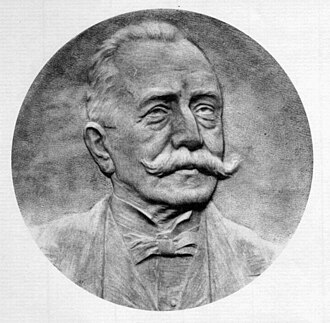

1847–1912
Italian
Analysis, function theory
Cesare Arzelà was born in Santo Stefano di Magra, a small town in Liguria. He studied at the Scuola Normale Superiore in Pisa under Enrico Betti and Ulisse Dini, completing his degree in 1869. After teaching at secondary schools for several years, he joined the University of Bologna in 1880, where he remained for the rest of his career.
Arzelà's most lasting contribution is the theorem that bears his name alongside Giulio Ascoli. Working independently but on closely related problems, Arzelà (1882–1883) and Ascoli (1884) established the conditions under which a family of functions on a compact interval has a uniformly convergent subsequence. Ascoli identified equicontinuity as the key condition; Arzelà proved the full compactness criterion. The result became foundational for existence proofs in differential equations, the calculus of variations, and functional analysis.
Before the Arzelà–Ascoli theorem, Arzelà had already made significant contributions to the theory of function series. His 1885 dominated convergence result for Riemann integrals anticipated Lebesgue's far more general theorem by nearly two decades. He also worked on the foundations of the calculus of variations, where the question of whether a minimum is actually attained requires precisely the kind of compactness argument that his theorem provides.
Arzelà spent his entire professorial career at Bologna, training a generation of Italian analysts. He died in Santo Stefano di Magra in 1912, the same town where he was born sixty-five years earlier.
| Phase | Page | Referenced for |
|---|---|---|
| Phase 2 | Bolzano-Weierstrass Theorem | Arzelà–Ascoli as generalisation to function spaces |
| Phase 9 | Baire Category and Arzelà–Ascoli | Statement and proof of the Arzelà–Ascoli theorem |
| Phase 9 | Baire Category and Arzelà–Ascoli | Historical context: compactness criterion (1882–1883) |
| Phase 9 | Baire Category and Arzelà–Ascoli | Break-box: failure without equicontinuity or boundedness |
| Phase 14 | Riesz's Lemma and Finite-Dimensional Characterisation | Equicontinuity criteria (Arzelà–Ascoli) as substitute for compactness |